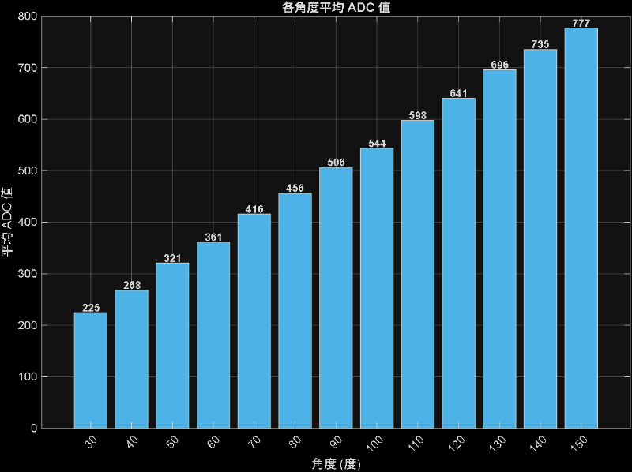
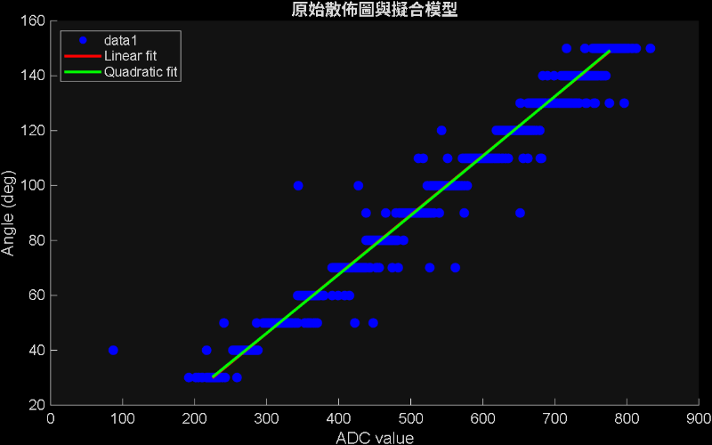

PTZ <<
Previous Next >> GY85_to_SERVO_originalData
angle2Servo_ADC_Data
這裡是用來找servo ADC對應到servo的角度 並用測試資料驗證
用MAE RMSE R² 來推測模型好不好
結論 :
一次曲線就夠用,但有些角度跟測試資料差很多 看原始資料發現他原本ADC就會亂飄
導致模型大概+-5°
divide SG90 and using a electric wire to contect Variable resistor

Code
#include<Servo.h>
Servo myservo;
int pos = 0;
void setup(){
Serial.begin(115200);
myservo.attach(PA0);
delay(1000);
}
void loop() {
for (pos = 60; pos <= 150; pos +=30) {
myservo.write(pos);
delay(1000);
myservo.detach();
Serial.print(pos);
Serial.print(",");
Serial.println(analogRead(PA7));
delay(100);
myservo.attach(PA0);
}
for (pos = 120; pos >= 30; pos -= 30) {
myservo.write(pos);
delay(1000);
myservo.detach();
Serial.print(pos);
Serial.print(",");
Serial.println(analogRead(PA7));
delay(100);
myservo.attach(PA0);
}
}
Result
/downloads/servo_angle_ADC.txt
/downloads/find_data.txt
Matlab find avarge
%{
2026/03/17
用來找servo ADC對應到servo的角度 並用測試資料驗證
用MAE RMSE R² 來推測模型好不好
結論 :
一次曲線就夠用,但有些角度跟測試資料差很多 看原始資料發現他原本ADC就會亂飄
模型大概+-5°
%}
clc; clear; close all;
figPos = [100 100 900 600]; % 視窗大小，可調
offset = 30; % 每個視窗偏移，避免完全重疊
%% 讀取校正資料
org_data = readmatrix('servo_angle_ADC.txt', 'Delimiter', ',');
angle_raw = org_data(:,1);
adc_raw = org_data(:,2);
%% 先按角度平均（去除重複影響）
unique_angles = unique(angle_raw);%unique();把()中的矩陣的每個元素小到大排列
adc_avg = zeros(size(unique_angles));
count = zeros(size(unique_angles));%用來計算每個角度有幾筆數據
for i = 1:length(unique_angles)
mask = (angle_raw == unique_angles(i));%這個角度出現的所有位置 回傳true ...
% 讓mask變成一邏輯矩陣 EX[0 ,1 ,0 ,0]
adc_avg(i) = mean(adc_raw(mask));%把這個角度出現的raw 給ADC用
count(i) = sum( mask);
end
angle = unique_angles'; % 轉成列向量（ polyfit 喜歡列向量）
adc = adc_avg';
%% 顯示平均結果
fprintf('\n=== 平均結果 ===\n');
fprintf('角度\t筆數\t平均 ADC\n');
for i = 1:length(unique_angles)
fprintf('%d°\t%d\t%.2f\n', unique_angles(i), count(i), adc_avg(i));
end
%% 擬合模型：angle = f(ADC)
p_lin = polyfit(adc, angle, 1); % 一次曲線
p_quad = polyfit(adc, angle, 2); % 二次曲線
%% 顯示擬合方程式（注意 polyfit 最高次在前）
fprintf('=== 擬合結果 ===\n');
fprintf('一次擬合： angle = %.6f × ADC + %.6f\n', p_lin(1), p_lin(2));
fprintf('二次擬合： angle = %.6e × ADC² + %.6f × ADC + %.6f\n', ...
p_quad(1), p_quad(2), p_quad(3));
%% 在原始數據上計算預測角度 & 誤差指標
angle_pred_lin_raw = polyval(p_lin, adc_raw);
angle_pred_quad_raw = polyval(p_quad, adc_raw);
err_lin_raw = angle_pred_lin_raw - angle_raw;
err_quad_raw = angle_pred_quad_raw - angle_raw;
mae_lin = mean(abs(err_lin_raw));
mae_quad = mean(abs(err_quad_raw));
rmse_lin = sqrt(mean(err_lin_raw.^2));
rmse_quad = sqrt(mean(err_quad_raw.^2));
fprintf('\n=== 原始數據上的誤差 (單位：度) ===\n');
fprintf('一次擬合 → MAE = %.4f° RMSE = %.4f°\n', mae_lin, rmse_lin);
fprintf('二次擬合 → MAE = %.4f° RMSE = %.4f°\n', mae_quad, rmse_quad);
%% R²
SS_tot = sum((angle_raw - mean(angle_raw)).^2);
SS_res_lin = sum(err_lin_raw.^2);
SS_res_quad = sum(err_quad_raw.^2);
R2_lin = 1 - SS_res_lin / SS_tot;
R2_quad = 1 - SS_res_quad / SS_tot;
fprintf('\nR² (linear) = %.6f\n', R2_lin);
fprintf('R² (quadratic) = %.6f\n', R2_quad);
%% 畫長條圖
figure('Name', '原始散佈圖','Position',figPos + [0 5*offset 0 0]);
b = bar(unique_angles, adc_avg, 'FaceColor', [0.3 0.7 0.9]);
xlabel('角度 (度)');
ylabel('平均 ADC 值');
title('各角度平均 ADC 值');
grid on;
set(gca, 'XTick', unique_angles, 'XTickLabelRotation', 45);
% ← 新增：在每根柱子上方顯示 ADC 值
xVal = b.XData;
yVal = b.YData;
for i = 1:length(xVal)
text(xVal(i), yVal(i) + 10, sprintf('%.0f', yVal(i)), ...
'HorizontalAlignment', 'center', ...
'FontSize', 9, ...
'FontWeight', 'bold');
end
%% 讀取測試資料
data = readmatrix('find_data.txt', 'Delimiter', ',');
ADC_test = data(:,2);
%% 畫原始散佈圖
figure('Name','原始散佈圖','Position',figPos + [0 4*offset 0 0]);
scatter(adc_raw, angle_raw, 60, 'filled', 'MarkerFaceColor','b');
xlabel('ADC value'); ylabel('Angle (deg)');
title('原始散佈圖與擬合模型');
set(gca, 'FontSize', 12);
%% 產生平滑曲線用
x_fit = linspace(min(adc), max(adc), 300);
y_lin = polyval(p_lin, x_fit);
y_quad = polyval(p_quad, x_fit);
hold on;
plot(x_fit, y_lin, 'r-', 'LineWidth', 2.2, 'DisplayName', 'Linear fit');
plot(x_fit, y_quad, 'g-', 'LineWidth', 2.2, 'DisplayName', 'Quadratic fit');
legend('show', 'Location','northwest');
hold off;
%% 對測試資料反推角度
fprintf('\n=== 測試資料反推角度 ===\n');
angle_test_lin = polyval(p_lin, ADC_test);
angle_test_quad = polyval(p_quad, ADC_test);
%% 看所有預測數據
% 全部資料 (linear)
disp('所有預測結果 (linear)：');
disp(' ADC 預測角度 (線性)');
disp([ADC_test angle_test_lin]);
% 全部資料 (quadratic)
disp(' ');
disp('所有預測結果 (quadratic)：');
disp(' ADC 預測角度 (二次)');
disp([ADC_test angle_test_quad]);
Result


=== 平均結果 ===
角度 筆數 平均 ADC
30° 136 224.66
40° 136 267.86
50° 136 320.90
60° 136 361.23
70° 136 416.03
80° 136 456.01
90° 136 506.29
100° 136 543.71
110° 136 597.64
120° 136 640.64
130° 136 696.01
140° 136 735.22
150° 136 776.62
=== 擬合結果 ===
一次擬合： angle = 0.215583 × ADC + -18.501444
二次擬合： angle = 6.319533e-06 × ADC² + 0.209235 × ADC + -17.097761
=== 校正點上的誤差 (單位：度) ===
一次擬合 → MAE = 0.6768° RMSE = 0.8215°
二次擬合 → MAE = 0.6736° RMSE = 0.8041°
R² (linear) = 0.999518
R² (quadratic) = 0.999538
=== 測試資料反推角度 ===
所有預測結果 (linear)：
ADC 預測角度 (線性)
370.0000 61.2642
469.0000 82.6069
617.0000 114.5132
703.0000 133.0533
616.0000 114.2976
490.0000 87.1341
348.0000 56.5214
234.0000 31.9449
346.0000 56.0902
488.0000 86.7030
648.0000 121.1962
768.0000 147.0662
645.0000 120.5495
495.0000 88.2121
320.0000 50.4851
229.0000 30.8670
344.0000 55.6590
503.0000 89.9367
620.0000 115.1599
768.0000 147.0662
648.0000 121.1962
496.0000 88.4276
350.0000 56.9525
223.0000 29.5735
361.0000 59.3240
512.0000 91.8770
659.0000 123.5676
所有預測結果 (quadratic)：
ADC 預測角度 (二次)
370.0000 61.1844
469.0000 82.4236
617.0000 114.4061
703.0000 133.1177
616.0000 114.1891
490.0000 86.9448
348.0000 56.4814
234.0000 32.2093
346.0000 56.0542
488.0000 86.5140
648.0000 121.1402
768.0000 147.3223
645.0000 120.4880
495.0000 88.0221
320.0000 50.5046
229.0000 31.1485
344.0000 55.6270
503.0000 89.7464
620.0000 115.0573
768.0000 147.3223
648.0000 121.1402
496.0000 88.2376
350.0000 56.9087
223.0000 29.8760
361.0000 59.2597
512.0000 91.6873
659.0000 123.5327
PTZ <<
Previous Next >> GY85_to_SERVO_originalData
Copyright © All rights reserved | This template is made with by Colorlib